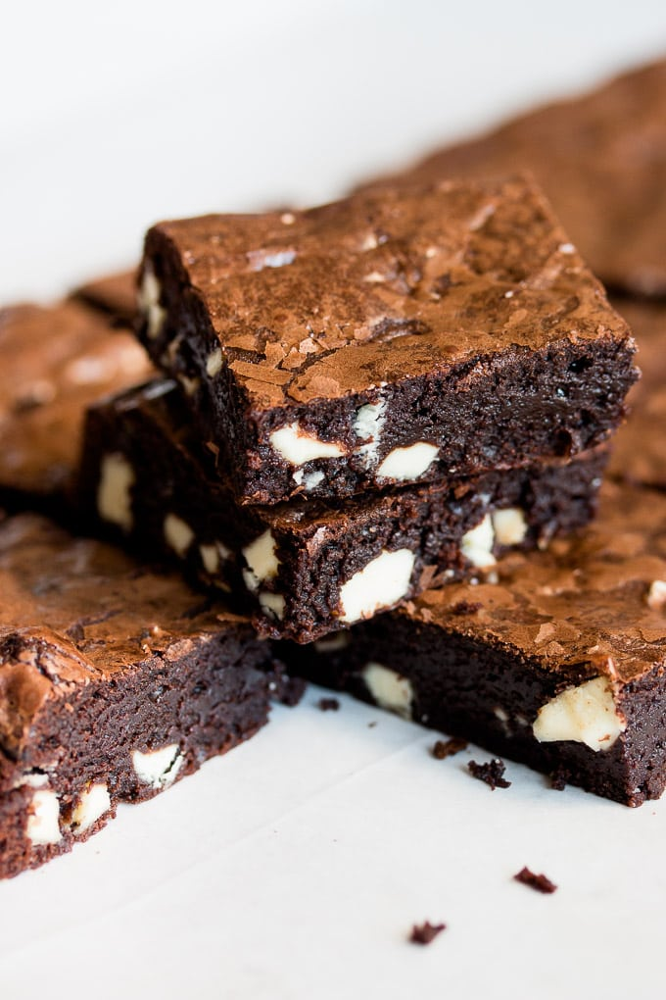

White Chocolate Brownies

Description
These fudgy brownies are filled with three kinds of chocolate for an ultimate treat. For chocolate lovers like me, these are the perfect brownies for you!
My perfect brownie is rich, fudgy and loaded with chocolate. My favorite ones to bake are my brownie muffins, but these white chocolate chip brownies might become my new favorite. The recipe is very similar but gets baked in a regular pan and adds in white chocolate chunks for an extra dose of chocolate.
- 2/3 cup (95g) all-purpose flour
- 1/3 cup (35g) unsweetened cocoa powder (I use Dutch-processed)
- 1/2 teaspoon salt
- 7 oz. (200g) bittersweet chocolate, coarsely chopped
- 2/3 cup (150g) unsalted butter, cut into pieces
- 3 large eggs
- 3/4 cup plus 2 tablespoons (175g) granulated sugar
- 7 oz. (200g) white chocolate chips or chunks
Steps
- Preheat oven to 350°F/180°C. Line a 9×13 inch pan with parchment paper or aluminum foil, leaving enough overhang on the sides for lifting the brownies out after baking.
- In a small bowl sift together flour, cocoa powder, and salt. Set aside.
In a medium heatproof bowl, place chocolate and butter. Heat mixture in the microwave in 20- to 30-second intervals, stirring between each interval, until melted. Alternatively, you can set the bowl over a saucepan of simmering water, stirring occasionally. Set aside.
- Using a mixer fitted with the whisk attachment, whisk eggs and sugar on high speed until thick and pale, 4-5 minutes. Turn off mixer. Slowly add in chocolate mixture and fold, using a rubber spatula, until combined. Add flour mixture and keep folding just until combined. Fold in white chocolate.
- Pour batter into prepared pan and smooth the top. Bake for 15-18 minutes. Don’t open the oven door in the first 13 minutes of baking. Mine are ready in 15 minutes, it sounds too short but these brownies aren’t very thick and it’s important to keep them fudgy, so be careful not to overbake. A toothpick inserted into the center of the brownies should come out moist, not dry. Let brownies cool completely on a wire rack. You can refrigerate until set for easy cutting. Lift brownies out of the pan using parchment paper and cut into bars. Slightly warm they’re heavenly!
- Store brownies at room temperature or in the fridge in an airtight container for up to 4 days. Serve warm or at room temperature. Brownies can be frozen for up to 2 months. Thaw them overnight in the fridge.